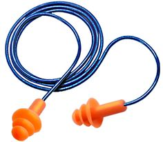

A los colaboradores que se encuentran laborando en el área del sorter no se les proporciona equipo de seguridad auditiva. De acuerdo a los comentarios tras externar esta duda el personal desconocía si se había realizado un estudio para determinar si era necesario el equipo de protección auditiva.
De acuerdo con la NORMA OFICIAL MEXICANA NOM-011-STPS-2001, CONDICIONES DE SEGURIDAD E HIGIENE EN LOS CENTROS DE TRABAJO DONDE SE GENERE RUIDO 5.4 Proporcionar el equipo de protección personal auditiva, de acuerdo a lo establecido en la NOM-017- STPS-1993, a todos los trabajadores expuestos a NSA igual o superior a 85 dB(A).
Revisar si al instalar este equipo se realizó esta consideración e identificar si el ruido producido es mayor a 85 db
Reducir una condición insegura de trabajo.
Revisar si ya se realizó dicho estudio y si no proceder a realizarlo para identificar si esta es una condición insegura de trabajo.